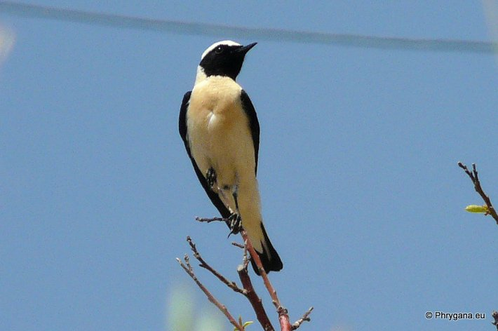

| PHRYGANA | Fauna | Flora | Galles | liste des espèces |
contact -
info - commentaires phrygana1 (at) gmail.com |
| Particularités crétoises | nouveautés | Mines | ressources naturelles |
| Oenanthe hispanica (Linnaeus 1758) |
| 451 | Fauna | AVES | SAXICOLIDAE | Oenanthe Vieillot 1816 |
|
 Oenanthe hispanica Agios Giorgos (Melambes) 20 mai 2013 |
| le Traquet oreillard - Black-eared Wheatear - Mittelmeer-Steinschmätzer - Collalba rubia - Monachella - Ασπροκώλα |
| Taille: 14 -16 cm. Gorge noire à blanche, poitrine chez le mâle couleur chamois; croupion blanc; barre noire terminale peu large de la queue; femelle avec le dessus généralement brun gris et poitrine jaune orangé brunâtre |
| Espèce active en (mars-)avril mai juin juillet août septembre. |
| Régime alimentaire: insectivore: insectes capturés sur le sol, les herbes basses ou en vol (comme les Gobemouches) |
| Nidification: avril mai juin; sur le sol, au pied d'un buisson, sous une pierre, dans une touffe d'herbes; la femelle pond 4-5 oeufs ; incubation : 13-14 jours par la femelle |
| Statut en Crète: indigène |
| Biotopes en Crète: phrygana, pelouses sèches, talus arides,collines pierreuses, falaises et éboulis,avec des arbustes ou arbres clairsemés. |
| Altitudes: 0 - 500 m. |
| Distribution: Europe principalement méridionale, Afrique du Nord, Porche-Orient, Moyen-Orient |
| Espèce en déclin en Europe |
| Migration: hivernage au sud du Sahara |
| 01 juin 2013 |
| © paul fontaine -- © Phrygana.eu 2007 -- 2013 |